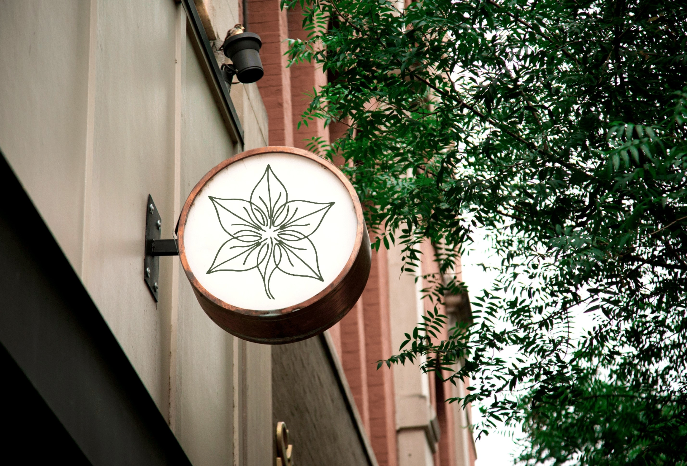

A Origem da Origema
A ORIGEMA nasceu da ideia de que o design pode ter propósito. Mais do que criar objetos bonitos, a marca surgiu para repensar a forma como consumimos, produzimos e nos relacionamos com os materiais ao nosso redor.


2018 — O começo
A ORIGEMA foi fundada em 2018 por um grupo de jovens designers recém-formados que compartilhavam a mesma inquietação: o excesso de consumo e o desperdício de materiais na indústria.
Durante a universidade, eles perceberam que muitos materiais descartados ainda tinham potencial criativo. Essa percepção deu origem à ideia de construir uma marca baseada na valorização da matéria-prima, do processo artesanal e da consciência ambiental.
Os primeiros produtos
O primeiro projeto da empresa foi uma pequena coleção de luminárias produzidas com madeira de demolição e resíduos industriais. Cada peça carregava pequenas imperfeições, marcas do tempo e histórias dos materiais utilizados.
O público rapidamente se identificou com a proposta. O que começou como um experimento criativo logo se transformou em uma pequena produção independente.
Expansão
Com o crescimento do interesse pela marca, a ORIGEMA passou a desenvolver novos produtos: mobiliário de pequeno porte, objetos utilitários e peças decorativas feitas com materiais reaproveitados.
Ao mesmo tempo, a empresa iniciou parcerias com artesãos, marceneiros e produtores locais, fortalecendo a economia criativa e valorizando técnicas tradicionais.
Hoje
Atualmente, a ORIGEMA participa de feiras de design, exposições e projetos colaborativos em diferentes regiões do país.
Mesmo crescendo, a essência permanece a mesma: criar produtos que carreguem significado, respeitem a natureza e conectem pessoas com a origem das coisas.